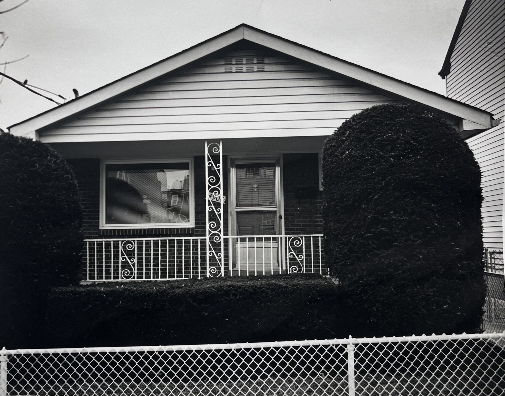
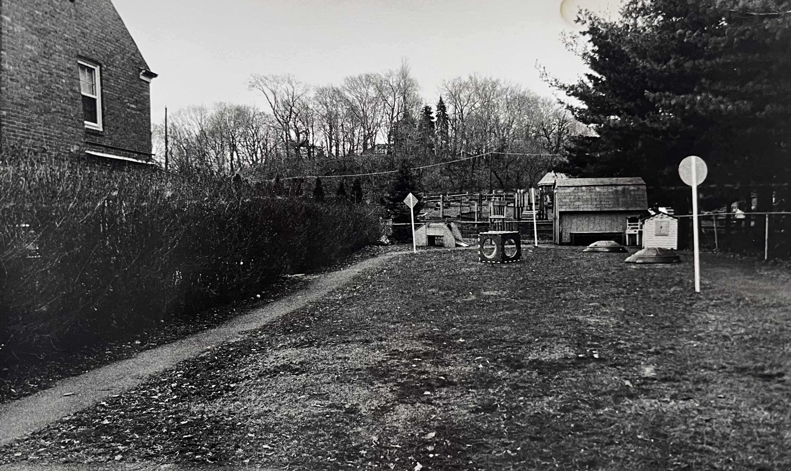
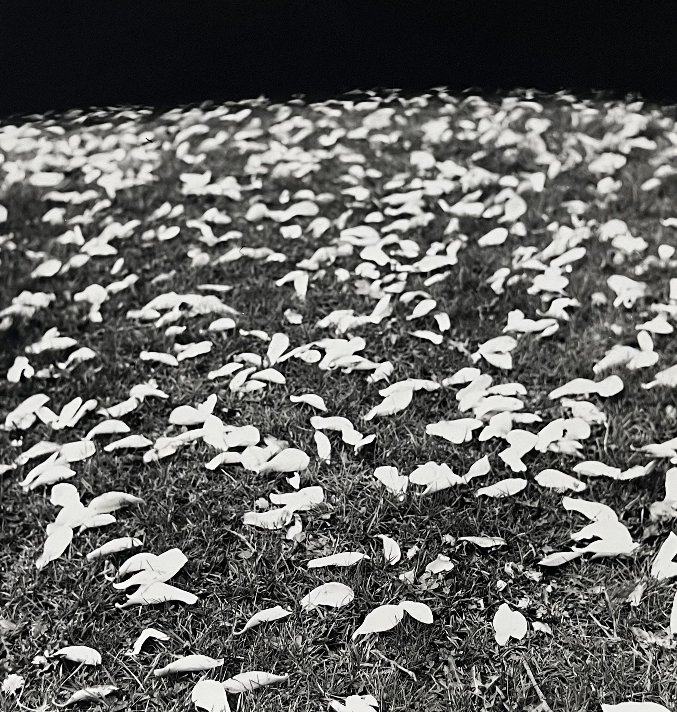
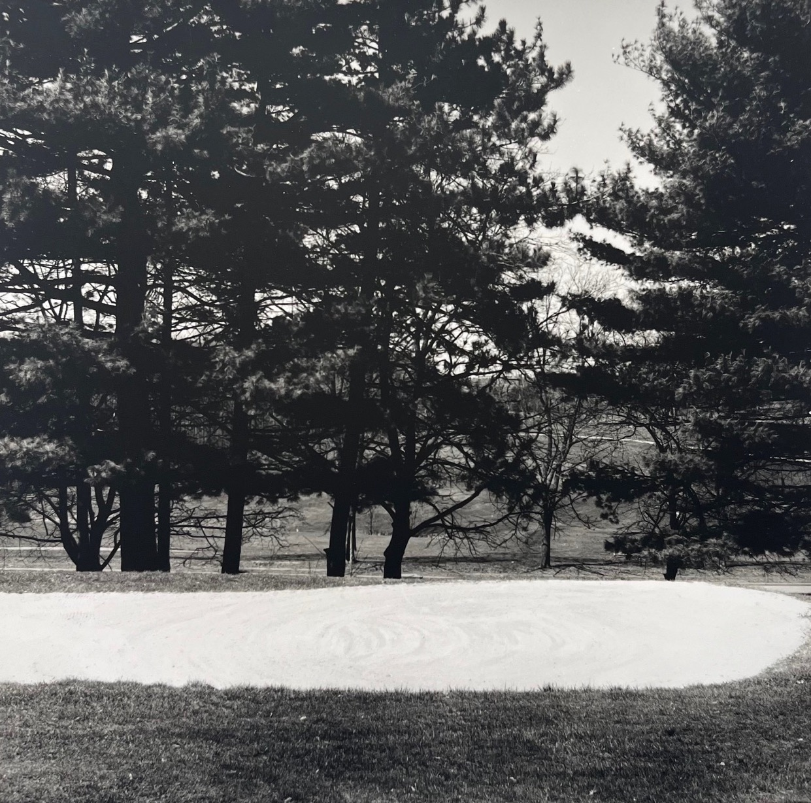
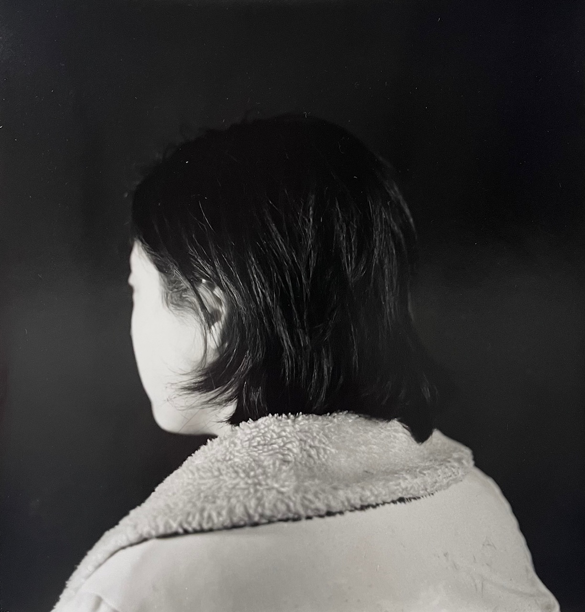
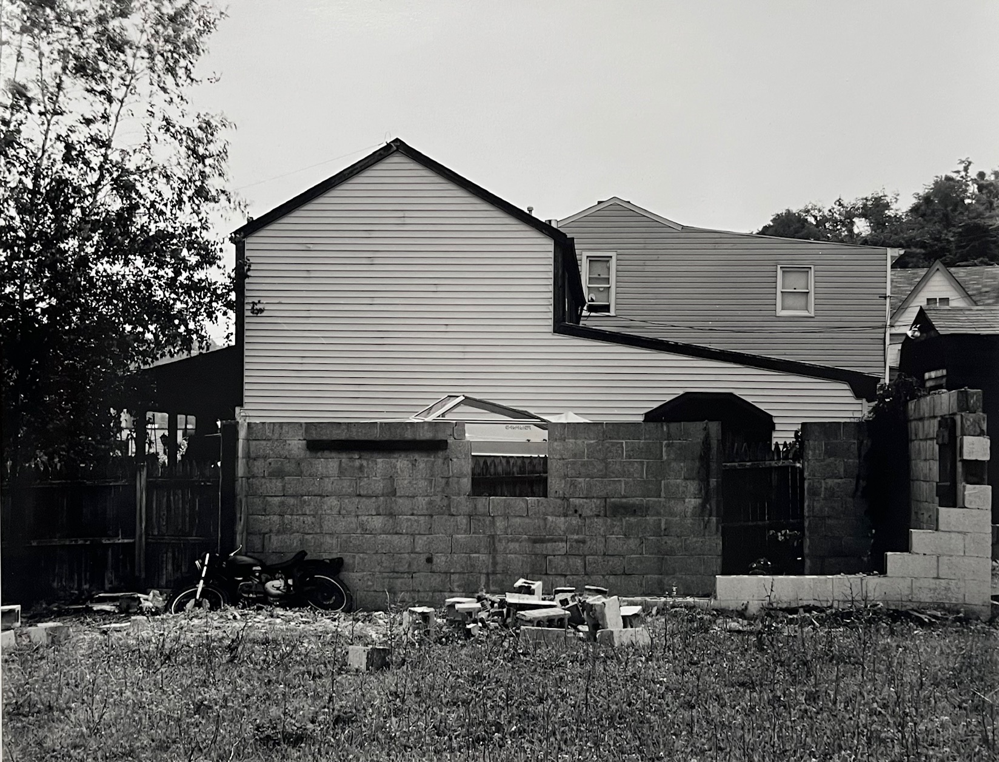
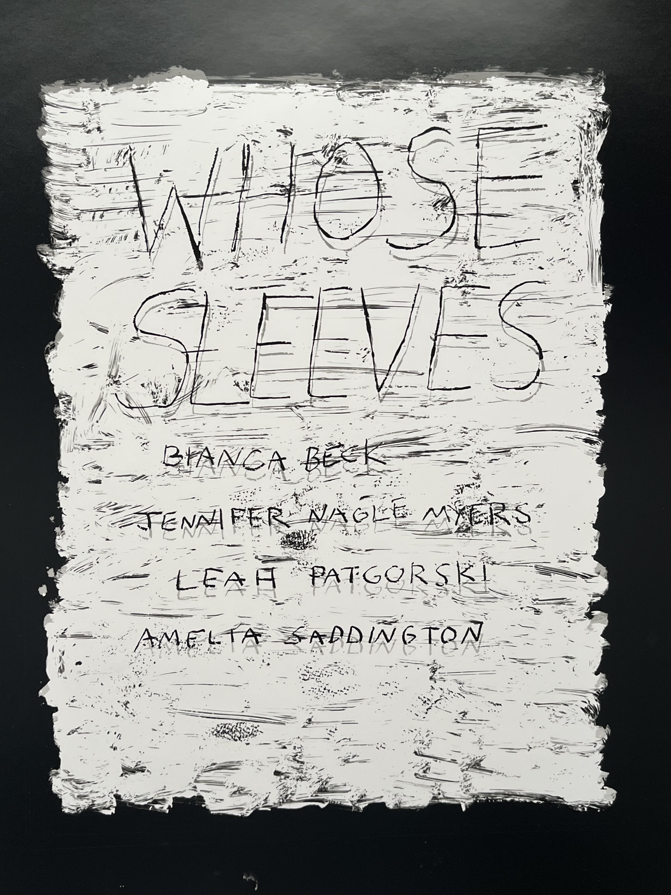
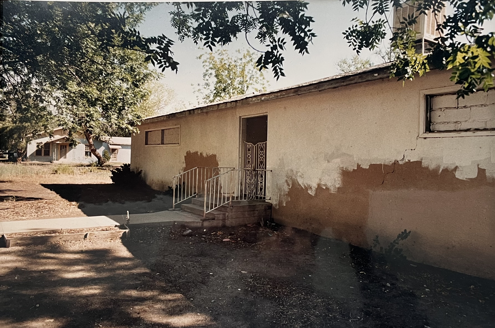

Photography
I have experience with film cameras and darkroom printing, both Black and White and Color. My photography is influenced by the work of Robert Adams. His humble documentation of the American West changed the way I see the suburban sprawl around Pittsburgh. With my photography, I explore the tension between the natural world and human development, with an eye for the uncanny moment.

Pittsburgh House

Playground

Landscape

Landscape

Portrait of an ear



Street Photography